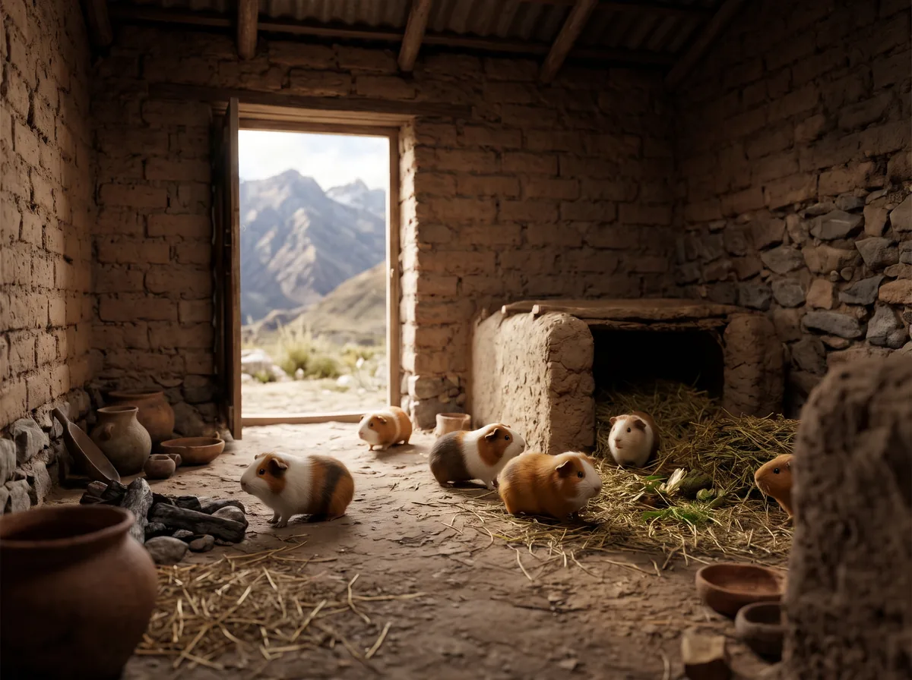

Из Анд в дома всего мира
Морскую свинку одомашнили в Южной Америке тысячи лет назад ради мяса. Питомцем она стала в Европе XVI века.

- Около 9000 года до н. э.
Самые ранние находки дикой свинки
Древнейшие известные останки диких морских свинок нашли в восточном высокогорье Колумбии.
Источник: Lord et al., Scientific Reports, 2020
- Между 6000 и 2000 годами до н. э.
Человек одомашнивает свинку в Андах
Точную дату назвать нельзя: источники дают разные оценки. Вероятный предок домашней свинки — дикий вид Cavia tschudii. Первое одомашнивание, вероятно, прошло в западных Андах, на юге современного Перу или севере Чили. Генетики предполагают и второй, отдельный центр в высокогорье Колумбии.
Источник: Lord et al., Scientific Reports, 2020; Spotorno et al., Journal of Zoology, 2006; Wikipedia, статья Guinea pig
- Древние Анды
Свинка становится едой и частью обрядов
Свинок разводили ради мяса, использовали в народной медицине и религиозных церемониях. Народ моче изображал их в своём искусстве. По рассказам испанских поселенцев, инки чаще всего приносили в жертву именно свинок. На кечуа животное называется quwi, отсюда испанское cuy.
Источник: Wikipedia, статья Guinea pig
- Около 1200–1532 годов
Появляются первые разновидности
Жители Анд отбирали животных для разведения и вывели много разновидностей. Они легли в основу некоторых современных пород.
Источник: Wikipedia, статья Guinea pig
- XVI век
Торговцы привозят свинок в Европу
Их везли испанские, голландские и английские торговцы, вероятнее всего, из Перу. Свинки стали модными питомцами у знати, в том числе у королевы Елизаветы I. Древнейшие останки в Европе нашли в бельгийском Монсе (1550–1640) и в английской усадьбе Хилл-Холл (1574–1575).
Источник: Lord et al., Scientific Reports, 2020; Wikipedia, статья Guinea pig
- 1580 год
Первое известное изображение в Европе
На картине этого года девочка держит черепаховую морскую свинку. Сейчас полотно находится в Национальной портретной галерее в Лондоне.
Источник: Wikipedia, статья Guinea pig
- XVII–XVIII века
Свинки приходят в лаборатории
Источники расходятся в дате начала опытов: XVII или XVIII век. В английском языке guinea pig стало обозначать и человека, на котором что-то проверяют. Откуда в названии слово guinea, точно неизвестно. Версия про монету гинею не подходит: её начали чеканить в 1663 году, а слово Ginny-pig встречается уже в 1653-м.
Источник: Wikipedia, статья Guinea pig; Lord et al., Scientific Reports, 2020
- Сегодня
Домашний питомец и выставочная порода
Заводчики вывели множество пород с разной шерстью и окрасом, по всему миру работают клубы разведения и выставок. В высокогорье Анд многие семьи по-прежнему держат свинок ради мяса.
Источник: Wikipedia, статья Guinea pig